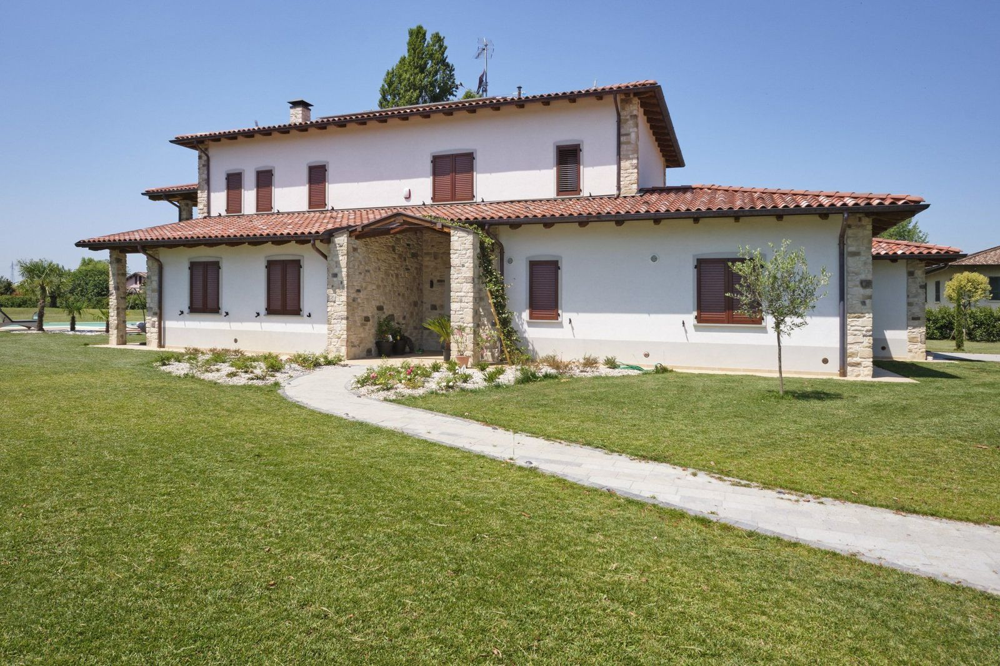

Edilizia residenziale e ristrutturazioni
Il futuro
prende
forma.
Immagina il tuo prossimo spazio.
Noi mettiamo l’esperienza per costruirlo.
Architettura, da ogni prospettiva.Modello 3D illustrativo · Anteprima architettonica
40+Anni di esperienza.
Uno sguardo avanti.
fino alle chiavi.Esplora le realizzazioni
Anni di esperienza.
La stessa cura, ogni giorno.
Fare bene.
In ogni dettaglio.
Ci sono spazi che immagini.
E persone che ti aiutano a realizzarli.
Da oltre quarant’anni costruiamo e ristrutturiamo a Parma e provincia. Case, luoghi di lavoro, nuovi modi di abitare: seguiamo ogni intervento con l’attenzione che merita.
Con la formula chiavi in mano coordiniamo le lavorazioni e i professionisti coinvolti. Per te, un unico interlocutore. Dalla prima conversazione alla consegna.
Parliamone di personaSpazi da vivere.
Lavori da guardare.
Le forme cambiano.
La cura resta.


La qualità
si vede.
E si vive.
Nella scelta di un materiale.
Nel modo in cui tutto si incontra.Esplora le competenze
Nuove forme.
Solide basi.
Una casa da costruire.
Un ambiente da trasformare.
La competenza per farlo.
01Nuove costruzioni
Case, ville e condomini. Seguiamo la realizzazione in tutte le sue fasi, dal primo sopralluogo alla consegna delle chiavi.
Cominciamo dal tuo progetto ↗02Ristrutturazioni
Case, appartamenti, bagni e cucine. Ripensiamo spazi, impianti e finiture insieme a te, in relazione alle esigenze e al budget.
Raccontaci la tua idea ↗03Facciate e isolamento
Ripristino delle facciate, restauro degli esterni e cappotti termici. Ci prendiamo cura dell’involucro e delle superfici dell’edificio.
Valutiamo l’intervento ↗04Tetti e terrazzi
Coperture, impermeabilizzazioni e lattonerie. Interventi su terrazzi e balconi, dalla valutazione delle infiltrazioni al ripristino.
Organizziamo un sopralluogo ↗05Spazi per le imprese
Edifici industriali e artigianali, capannoni e strutture commerciali. Una gestione completa per gli spazi della tua attività.
Scrivici del tuo progetto ↗06Progetti speciali
Piscine, campi da tennis, lavorazioni in sasso e interventi di adeguamento sismico. Esperienze diverse, la stessa attenzione.
Parliamone ↗
Dal primo incontro, al primo giorno a casa.Al tuo fianco.
Fino alle chiavi.
- 01
Ascoltiamo
Un incontro e un sopralluogo per conoscere gli spazi, le esigenze e ciò che immagini.
- 02
Definiamo
Mettiamo a fuoco intervento, materiali e lavorazioni, in relazione al progetto e al budget.
- 03
Realizziamo
Seguiamo il cantiere e coordiniamo i professionisti, tenendo insieme tutte le fasi.
- 04
Consegniamo
Portiamo a termine il lavoro, accompagnandoti fino alla consegna dell’intervento.
Il prossimo
spazio è tuo.
↗Raccontaci cosa vuoi costruire o rinnovare.
Ci incontriamo a Parma e provincia.